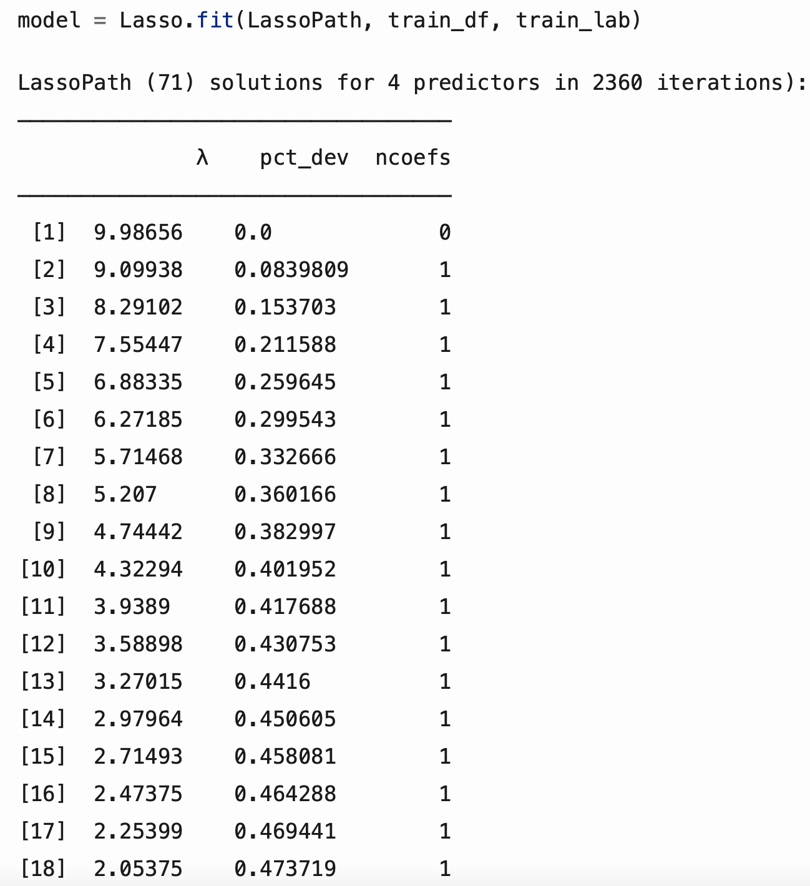
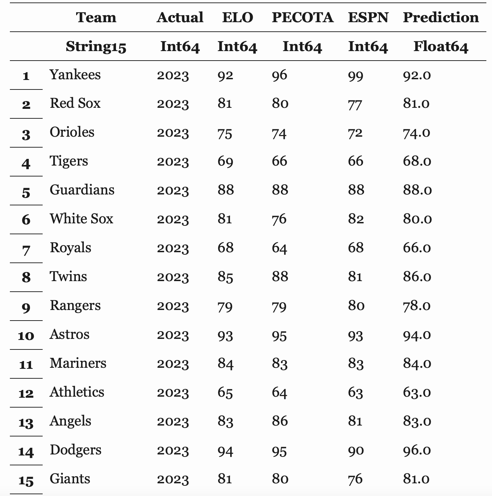
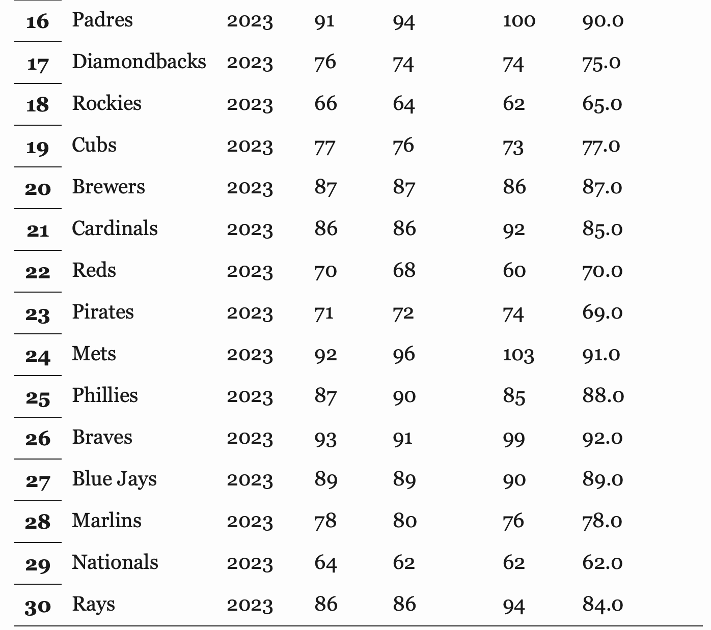

JuMP and Lasso in Julia
The purpose of the last portion of this project was to introduce myslef to the package JuMP and to use a Lasso model within Julia. Both of these are included in the machine learning side of Julia. The data for this part of the project was collected from FiveThirtyEight, ESPN, and Baseball Prospectus. Models were taken from each of these sources and then used to create a new model with each taken into account.
JuMP
JuMP, or Julia for Mathematical Programming, is a tool that is written in the language of Julia. It is called the same way a package is and assists in model creation and optimization. It supports a veriety of solvers for problems, including both linear and nonlinear programming. Using JuMP was one of the biggest problems that I have run into throughout this project as it, when setting the objective for optimization, repeatedly killed the kernel. Unfortunately, I was not able to solve this issue, making this an issue that I will still need to solve and is a topic for further research. The concept behind my use of it, though, was that an XGBoost model was created, a solver was chosen (options include HiGHS, GLPK, and Gurobi), and the objective of the optimization problem is set for the model to be trained.
Lasso
Lasso is a package in Julia that allows one to use Lasso models. Lasso models are linear regression models that use L1 regularization to perform variable selection and avoid overfitting. The data for the model is from MLB team standings, ELO from FiveThirtyEight, PECOTA from Baseball Prospectus, and ESPN projections, each for the 2017 to 2022 seasons (excluding the COVID shortened 2020 season).
Before using the models to train a new combined model, the RMSE for each of the models was first looked at to see how the individual models were performing. Root mean squared error was selected as the metric of the models as the units of it were in the original units (wins). Each of the models had an RMSE between 10 and 11, with ELO having the lowest by a mere .26 over PECOTA and then ESPN coming in at .75 below ELO. The goal of creating a new model would then be to create a model with an RMSE below 10 and use it to predict the 2023 season.
Lasso creates a number of models with each having a varying amount of coefficients, with those coefficients being driven to zero by a penalty from the L1 regularization. The output of a trained model from the package looks like the sample below, with each row representing a different model. Each model can then be used to predict a test set of data and have its RMSE found from the predictions. The model with the lowest RMSE will then be used to predict the 2023 standings based on the ELO, PECOTA, and ESPN projections.
The model with the lowest RMSE had an RMSE of around 9.5, which is about .53 below the RMSE of ELO. While this is not too different than ELO, the predictions for the 2023 season are usually off from the predictions of ELO by one or two games. The full predictions for the 2023 season can be seen below with the full analysis at the top
 